웰컴 투 작업실 - 여기서 놀자
2003 스톤앤워터 전시지원공모선정 세번째 전시
2003_0705 ▶ 2003_0805
_waifu2x_photo_noise3_scale.png)
초대일시_2003_0705_토요일_05:30pm
초대일시에 개막고사와 퍼포먼스가 준비되어 있습니다.
전시기획_박소정_송동하_허민희_강세경_만화집단BUG(박수로 외 4명)_박지영_이지연
이지은_이주복_이호동_조영호_최병관_황호석
보충대리공간 스톤앤워터
경기도 안양시 만안구 석수2동 286-15번지
Tel. 031_472_2886
보충대리공간 스톤앤워터가 한 달 동안 작가들의 작업실로 탈바꿈한다. 이름하여 『웰컴 투 작업실』이다.
● 『웰컴 투 작업실』은 서로 다른 지역에서 상이한 작업을 해오던 13명의 작가들이 만든 공개된 공동작업실이다. 전시공간에 연출된 작업실에서 작가들은 페인팅, 설치, 사진, 애니메이션 등의 개인 작업을 선보이고 방문한 관객들과 함께 작업을 진행시켜나가며 전시를 보충시켜나간다.
● 전시공간을 작가들의 작업실로 꾸미면서 작업실은 관객과 작품이 소통하는 장소가 된다. 즉, 『웰컴 투 작업실』展은 관람객-갤러리-작가로 연결되는 폐쇄 시스템에서 벗어나 관람객-작업실(=갤러리)-작가를 연결시켜 관객이 생활 속에서 예술을 대면할 수 있는 소통의 연결고리를 형성한다.
● 관람객들은 작업실에서 작업 중인 작가의 일상을 살펴보며 작가와 담소를 나누기도 하면서 그들이 준비한 이벤트와 공동작업에 참여할 수 있다. 관람객은 기존의 전시장에 비치된 결과물로써의 작품이 아니라 과정으로써의 작업을 목격하고 그 현장에 개입되어 작업의 증거물로 남게 되는 것이다.
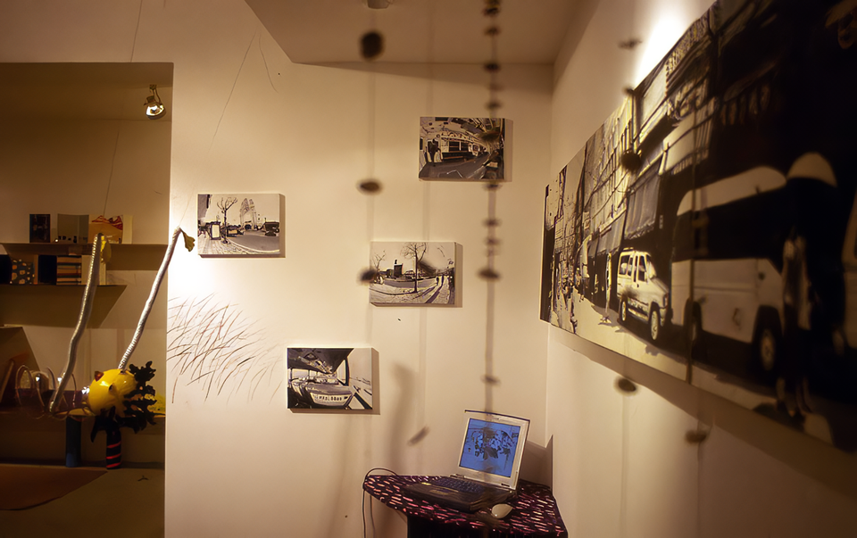 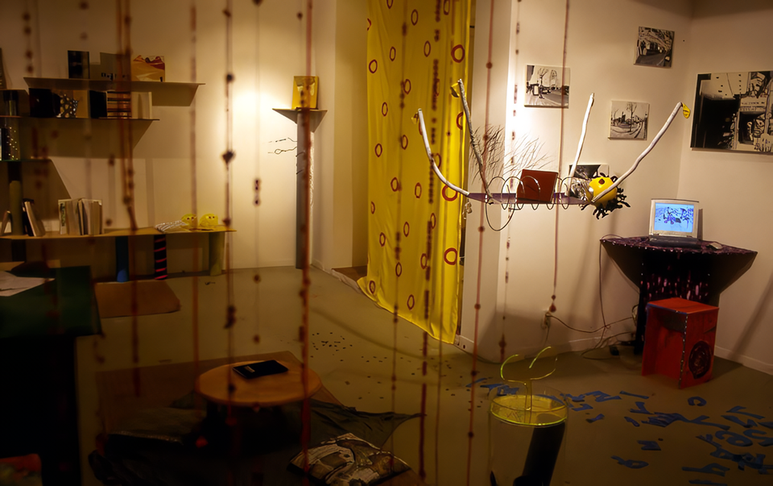 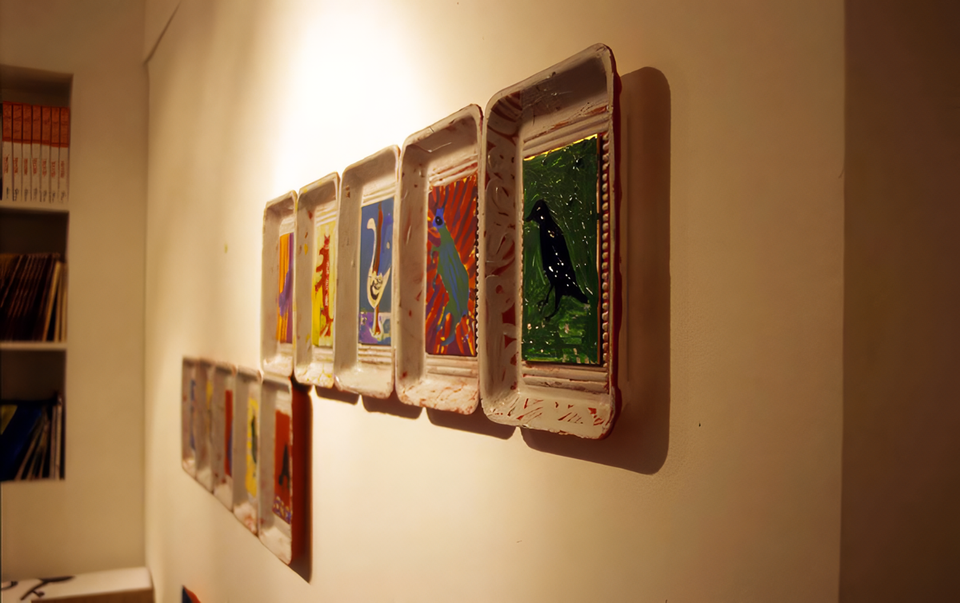 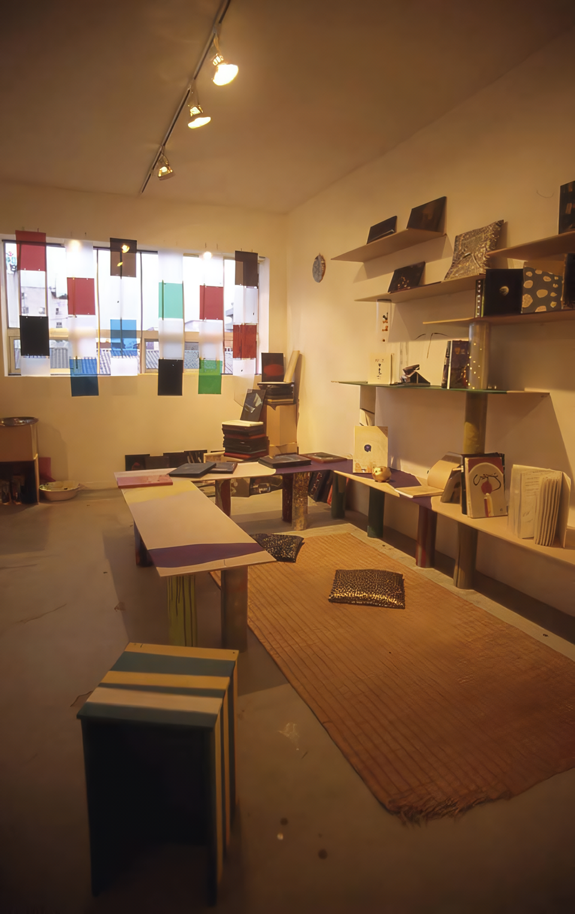 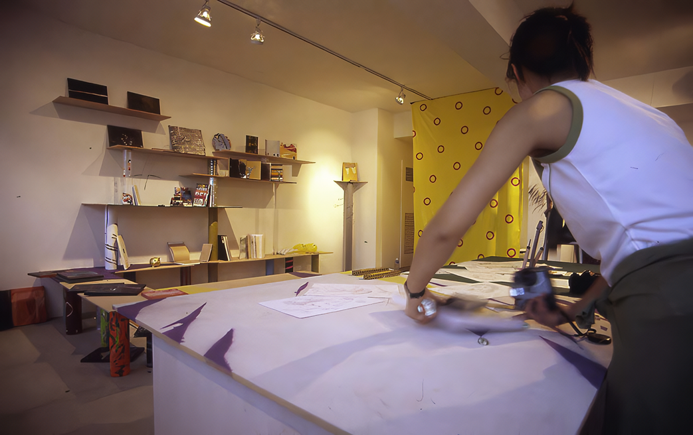 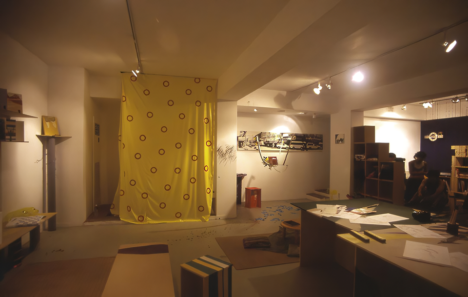 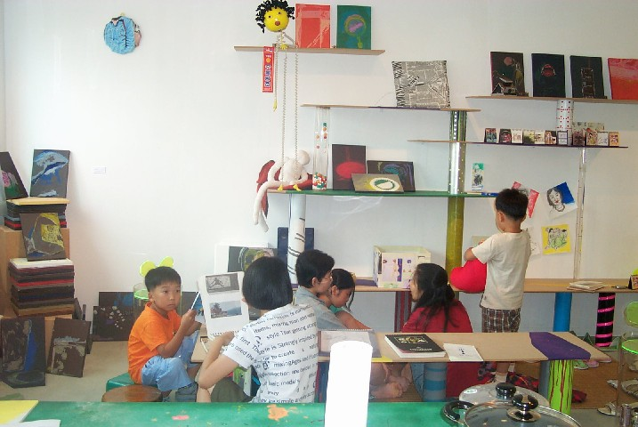 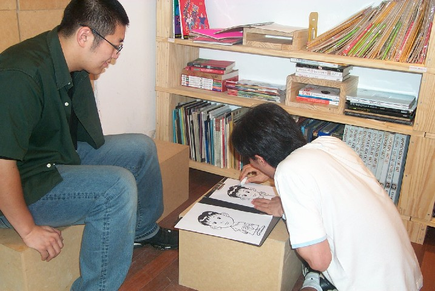_waifu2x_photo_noise3_scale.png)
_waifu2x_photo_noise3_scale.png)


연출된 공동작업실은 작가들이 직접 제작한 가구, 소품으로 구성하고 제작되어진 작품을 전시하며 한 달 여간의 기간동안 계속해서 작업을 진행시켜 나간다. 작업실에서 진행되어지는 작품은 관람객과의 교류를 바탕으로 해서 제작되어진다.
● 박소정은 릴레이 그림책 만들기를 관람객들의 참여를 통해 한달동안 진행시킨다. 원숭이 엉덩이는 빨개～로 시작되는 동요의 노랫말을 관람객들이 릴레이로 이미지화해 보는 작업이다. 또한 버드나무라는 제목의 발을 제작해 미술작품을 생활공간에서 활용할 수 있게 하는 작업을 진행한다.
● 송동하는 실내공간을 꾸미는데 있어, 창문의 창살과 반투명 커튼을 제작하여 소통의 의미에 대해 이야기한다.
● 허민희는 예술과 생활의 경계를 굳이 구분하지 않는다. 자신의 엉덩이형태를 본떠 만든 엉덩이의자, 인형작품과 책꽂이 등으로 예술작품의 생활화를 시도한다.
● 이호동은 '언어에 자유를 찾아주자'라는 주제로 관객과 함께 한 언어에 여러글을 담아내는 작업을 진행시키며 언어를 심는 나무(나무볼펜)을 제작한다.
● 만화집단 B.U.G는 다양한 사람들의 생각에 대하여 감정을 주제로 만화를 제작하였다. 전시기간동안에는 관객과의 만남을 통해 캐리커처와 새로운 4컷만화를 제작한다.
● 박지영은 군것질과 쓰레기에 대한 출발로 새싹이 돋아난 쓰레기통을 제작한다.
● 이주복은 피상적인 부모와 자식간의 관계를 넘어서 실생활에서의 모습을 사진작업으로 표현한다.
● 이지은은 지루하게 반복되는 일상탈출을 픽토그램을 사용하여 표현한 「EXIT」와 정체성을 찾는 아이를 라인으로 작업한 「WHO IS HE?」라는 두가지 애니메이션 작업을 선보인다.
● 강세경은 자신이 생활하는 공간을 사실적인 유화작업으로 표현한다.
● 조영호는 오픈식날 「간, 사이'」라는 제목으로 의식하지 못했던 틈에서 자신에 대한 인식을 의도하는 퍼포먼스를 한다.
● 최병관은 다양한 드로잉 작업과 드로잉 노트를 전시한다.
- 참관기 -
각지역에 흩어져서 작업하던 15명의 젊은 작가들이 안양시 석수동 시장통에 공동의 작업실을 꾸미고 7월 한달동안 입주한다. 입주날자는 7월5일 토요일 오후5시에 입주 고사식에 이어 조영호의 '틈'이라는 주제의 퍼포먼스를 시작으로 그들의 공동생활이 시작된다.
이들은 올초부터 수차레 입주할 지역과 공간을 탐사하고 공간설계를 완성했다. 그들은 10여일 설계도면대로 공동의 작업실을 꾸미느라 분주했다. 선반과 작업대를 짜고 각자의 공간을 설정하고 각자의 작업도구들과 작품들을 날라왔다. 그뿐만이 아니라 관악역에서 입주공간까지 오는길을 단장하기 시작했다. 그들이 설정한 길은 옛 안양영화촬영소가 있던 뒷길을 택하여 200m 나 되는 아파트 담장을 도색하고 수를 놓듯 벽화를 그려간다.(최병관외 다수) 그들이 공동작업실 외벽도 멋진 비닐커버를 만들어 씌운다. 그들은 철저하게 입주하는 동네에 동화되기를 꿈꾸고 있는듯 하다. 그들의 입주 준비는 끝났다.이제 한달동안 찾아오는 관객들과 함께 작품만들기에 들어간다.
7월의 불볕더위와 지루한 장마가 계속되더라도 그들의 작업열기는 끊기지 안을 것이다. 잠시 그들의 공동작업실에 들어가 보자. 20여평의 작은 공간을 어떻게 15명이나 되는 작가들이 공동의 작업실로 사용할까? 문을 열고 들어서는순간 바닥에 흩어진 수많은 동전들에 눈길이 간다. 10원짜리가 주종을 이루지만 집어가려고 슬그머니 손을 뻘쳐보지만 떨어지지 않는다. 찰떡같이 붙어버린 수백개의 동전들이 멀리서 웃고 있는 돼지 저금통까지 이어진다 . 자본주의세상에서 福은 돈에서 온다는 뜻일까? 돈이 돼지저금통으로 이어지는것을 보면 입주하는 작가들이나 찾아오는 관객 모두에게 "부자되세요"라는 외침의 소리로 들리는듯 하다.
이번 프로잭트의 대장격인 박소정은 릴레이책자를 만들어 관객과 이어그리기를 시도한다. "원숭이 똥구멍은 빨개-빨가면 사과-사과는 맛있어~로 이어지는 릴레이책이 완성되면 이들의 입주전도 끝나게 될것이다.
그들의 공간에는 칸막이가 없다.각자의 영역은 각자의 작품경향이 다름으로 구분된다. 이주복의 사진작업과 송동아의 책작업이 구별되고, 강세경의 단색조의 유화작업과 더미로 쌓아놓은 박지영의 공간이 구별되고 4명의 만화집단bug의 만화작업과 이지은의 에니메이션작업이 구별된다. 그들이 사용하는 작업재료 또한 다양하다. 황호석은 일회용스트로폴접시에 그림을 그리고, 이호동은 나무로 볼펜을 만들어 판다. 이지연은 연필로 최병관은 싸인펜으로 작업을 한다. 허민희는 온갖 재활용품으로 만든 '민희인형'을 천장에 매달아 책꽂이로 사용하기도 한다.
그러나 이들사이에 차이나 구별은 중요하지 않은 듯하다. 서로의 작업에 관섭되고 영향을 주기도 하고 이들은 관객과 만나서 섞이기를 꺼리지 않는듯 하다. 관객의 포토앨범을 제작하거나 관객과 벽화를 공동으로 제작하고 관객의 엉덩이의자가 제작되기도 한다. 이들은 '관객여러분! 제발 간섭 좀 해주세요' 라고 외치듯 전시제목도 '월컴투작업실-여기서 놀자'다.
초복에는 꼭 들리시라!
왜냐하면 7월16일(초복)에는 관객과 삼계탕을 만들어 나누어 먹는 이벤트도 준비되어 있기 때문이다. 이들의 입주장소는 안양시 석수동(국철 1호선 관악역에 하차 10분거리)에 위치한 재래시장 한편에 마련된 보충대리공간 스톤앤워터(supplement space Stone& Water)다. 스톤앤워터 기획공모선정 3번째 전시프로잭트이다. 그동안 스톤앤워터는 설수진의 원룸에서 17평형 재래식아파트로 다시 자생예술시장과 상상도서관으로 변모의 변모를 거듭해나가고 있다. 이번에 만들어지는 '웰컴투 작업실-여기서 놀자'전은 박소정, 허민희, 송동하 책임기획으로 이루어 진다. 젊은 작가들의 공동작업장으로 여러분들을 초대합니다.
오시는 길은 홈페이지 : http://www.stonenwater.org 를 참조하시거나 031-472-2886 로 전화 주시면 됩니다.
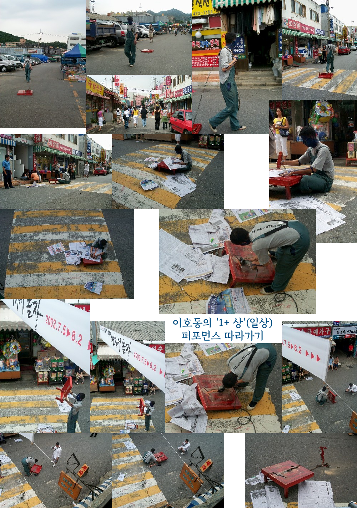
석수시장 어디선가 부러진 상을 질질 끌으며 가는 파란 얼굴 사나이 등장
파란 사나이 뒤를 관람객들 급히 쫓는다
뒤로 안돌아보고 석수시장 구석구석을 도는 청색인
청색인 드뎌 스톤앤워터 앞까지 도착
한쪽 다리 부러진 상을 피곤 앉아서 그 위에서 신문을 보고 부러진 다리를 들어 뭔갈 끄적인다
상위에 '1'자를 세기더니 상의 '1'을 파낸다
'1'이 파내어진 상을 뚫어지게 바라보는 청색인.. 일상을 바라보다
상에서 파내어진 독립된 '1'을 상과 연결하여 석수땅에 세우다
퍼포먼스가 끝난 후 자신의 일상으로 돌아가는 관람객들의 모습이 분주하다
'1+상'의 흔적은 남겨진채..
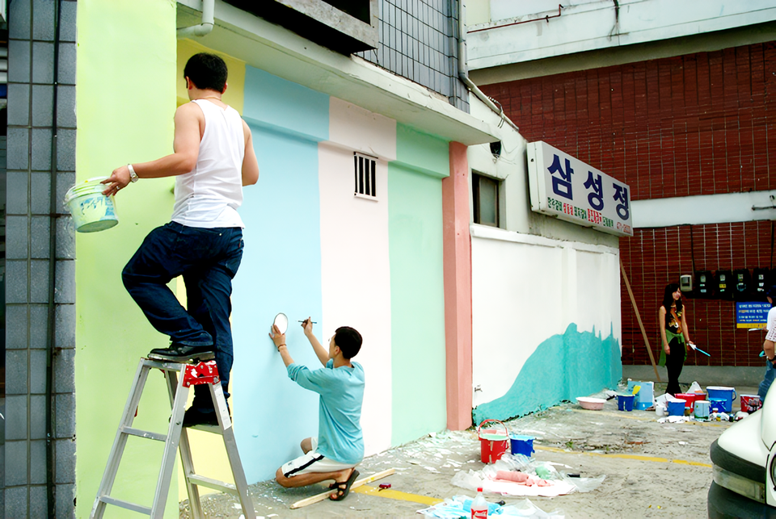 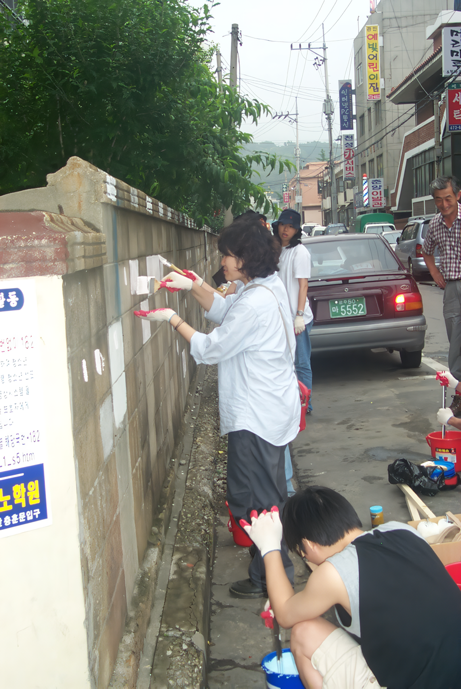_waifu2x_photo_noise3_scale.png)
이밖에도 웰컴투 작업실 작가들이 모두 참여해 한 달 동안 작업공간으로 쓸 석수동에 벽화프로젝트를 진행시킨다. 외부 벽화는 관악역에서부터 시작된 골목길 담에 그려져 스톤 앤 워터를 찾아오는 이들의 눈을 즐겁게 하는 장치임과 동시에 석수동 마을을 아름답게 꾸미는 역할을 한다.
■ 웰컴 투 작업실
● 『웰컴 투 작업실-여기서 놀자』展 부대행사
2003_0705_토요일_05:30pm_개막식_작업실 고사
2003_0705_토요일_06:00pm_조영호 퍼포먼스
2003_0712_토요일_초?중?고생과 함께하는 실내벽화 그리기
2003_0716_수요일_삼계탕 이벤트
2003_0717_목요일_석수동 벽화 프로젝트
2003_0726_토요일_이호동 퍼포먼스
● 『웰컴 투 작업실-여기서 놀자』展 관객 참여 프로젝트
이주복_작업실 방문고객의 현장 photo album 제작
박소정_꼬리에 꼬리를 무는 릴레이 그림책 작업
허민희_엉덩이 의자 제작
B.U.G_인물 캐리커쳐